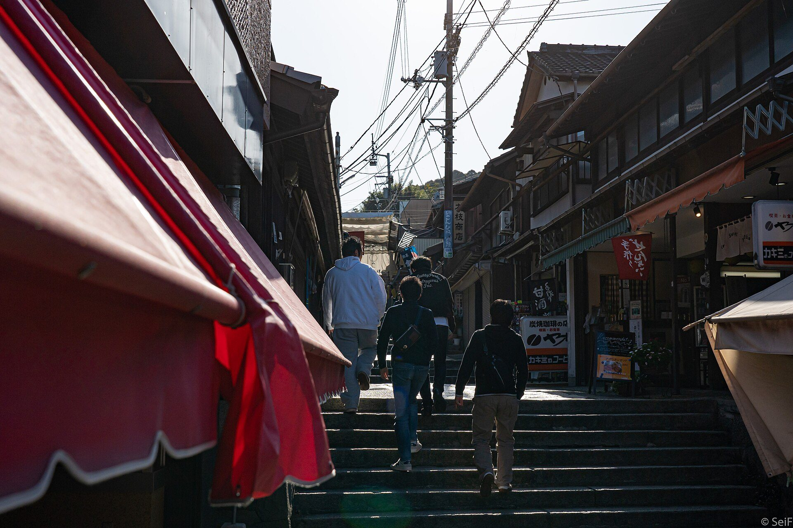
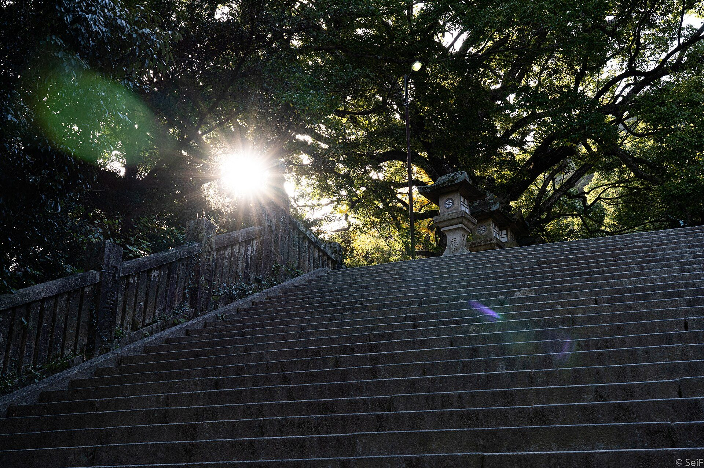
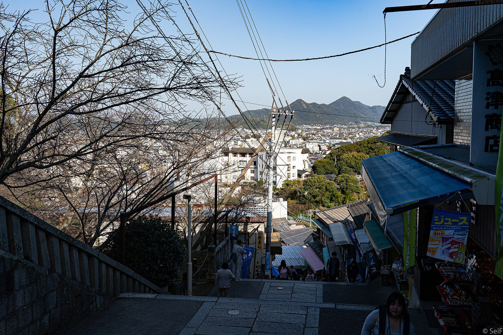

仕事の話ばかりの毎日で、
自分のやりたいことは、しばらく誰にも話していない。
香川・琴平で好きなことを始めた人に会い、
町の人と話しながら、自分の「やりたい」を確かめる1泊2日です。
香川・琴平／1泊2日／定員10名
LINEで申し込むPOOLOの卒業生も、POOLOがはじめての方も参加できます。



休みの日に豆を挽いてコーヒーを淹れる。旅先で撮った写真を、誰に見せるでもなくフォルダに並べている。友だちに本を薦めるときだけ、少し早口になる。好きなことは誰にでもあるのに、それを人に向けて「始める」となると、途端に大ごとに感じてしまいます。お店を開くほどでも、副業にするほどでもないし、何から始めればいいのかも分からない。
POOLOを卒業して、自分の問いを持ち帰った人も。これからPOOLOに参加するか、考えている人も。好きなことを始める手前で立ち止まっている時間は、たぶん同じくらい長いのだと思います。
この旅では、好きなことを始めた人たちに琴平で会い、2日目には町の方と1対1で話しながら、自分の「やりたい」を確かめます。持ってくるのは、まだ誰にも話していない「やりたい」ひとつで足ります。

香川県のほぼ真ん中、人口7,700人ほどの琴平町は、金刀比羅宮（こんぴらさん）の門前町です。江戸時代には「一生に一度はこんぴら参り」と言われ、いまも年間200万人を超える人が、本宮まで785段の石段を登りに訪れます。昔の人の日記には、よその町から来ても琴平だけはよそ者扱いされなかった、と書かれているそうです。
この町が変わりはじめたのは2021年ごろでした。コロナで観光客が半分近くまで減ったころ、参道の店の経営者が30代・40代へと入れ替わり、同じ時期に移住してきた人たちが5軒ほど店や事業を始めています。築60年の空きビルを、カフェとイベントスペースとシェアアトリエとホステルが入る「HAKOBUNE」に変えた人もいます。
TABIPPOは2021年から琴平に通っていて、そのとき町で出会った人たちの話から「好きが琴開く（ことひらく）」ということばをつくりました。一人ひとりが好きなことを自分のやり方で始めて、それが町を少しずつひらいていく。5年たったいまでは、町の人たち自身がこのことばで琴平のことを話してくれるようになりました。
町の人と話していて、印象に残っていることばがあります。琴平はもう完成された町に見えるかもしれないけれど、最初はみんなそうじゃなかった。今回会いに行くのは、その「最初」を覚えている人たちです。発言の掲載はご本人に要確認
事前オンライン、現地での1泊2日、事後オンラインの3つで、ひとつのプログラムです。
 事前・オンライン
事前・オンライン60分／12月上旬 日時は要確認
琴平がどんな町で、どんな人たちが何を始めてきたのかを聞きます。そのあと、参加者一人ひとりが、まだ誰にも話していない「やりたい」をひとつ話します。
2026年12月20日（日）12:30 〜 21日（月）15:00
1日目は石段を登り、好きなことを小さく始めた人たちの話を聞き、夜は町の人と食卓を囲みます。2日目は町の人と1対1で過ごし、最後に参加者同士で振り返ります。
 事後・オンライン
事後・オンライン60分／2027年1月 日時は要確認
旅から帰って3〜4週間後に、もう一度集まります。帰ってから小さく続けてみたこと、やろうとして止まっていること、琴平で会った人の顔を思い出した場面。それぞれの続きを話します。
2日目が月曜日なので、15時には解散します。時間はすべて要確認
集合・自己紹介
事前オンラインで話した「やりたい」を、あらためて一人ずつ共有します。
こんぴらさんの石段を、2人1組で登る
本宮まで785段。POOLOの卒業生と、これからの人が組になって、話しながら登ります。
始めた人たちの話を聞く
HAKOBUNEで、琴平で好きなことを始めた2〜3人から、最初のころの話と、いま困っていることを聞きます。
参道と商店街を歩く
聞いた話を思い出しながら、夕方の参道を歩きます。気になった店には寄り道してください。
町の人と夕食
話を聞いた方々も一緒に、食卓を囲みます。
朝の参道を歩く・朝食
店が開く前の、人の少ない参道を歩きます。
町の人と1対1で過ごす（90分）
参加者1人に町の人1人。店の開店準備や仕事を手伝いながら、一緒に過ごします。
1対1で話したことを持ち寄る
町の方と話したことを、参加者同士で共有します。
昼食
振り返り
個人ワーク、3〜4人での対話、全員での共有。帰ってから続けてみることを、ひとつ書いて持ち帰ります。
JR琴平駅 解散
いま、町の方々にお願いしているところです。お名前は決まり次第掲載します。お名前・プロフィールは要確認
参道の商店 店主要確認
参道で代々続く店を営む方。店の改築を機に、町の人と一緒に動き出したころの話と、次の世代に「始めていいんだ」と伝えたいという想いを聞きます。
HAKOBUNE要確認
親戚の空き家をきっかけに琴平で事業を始め、築60年のビルをHAKOBUNEに変えた方。宿やお店を、どういう順番で、どれくらいの大きさから始めたのかを聞きます。
移住して店を開いた方要確認
旅やツアーで琴平に来たことをきっかけに移り住み、小さく店を始めた方。始める前に何に迷って、何が最後に背中を押したのかを聞きます。

この2日間で、好きなことが仕事になるとは約束しません。持ち帰ってほしいのは、自分の「やりたい」を一度人に話してみた、という小さな経験です。
今回は、向かないかもしれない方

あたらしい旅の学校 POOLOは、旅をきっかけに、自分の人生やこれからについて考えるコミュニティです。旅、対話、仲間、問い、実践を通して「自分がどう生きたいのか」を考える。POOLOには、問いを持って世界や人生に向き合う文化があります。
POOLOを運営するTABIPPOは、2021年から琴平町に通ってきました。学生やPOOLOのメンバーと一緒に町を訪ね、2025年度は4回、町の11の事業者と一緒に、TABIPPOのコミュニティのための特典もつくっています。今回の旅は、その5年のあいだに出会った人たちにお願いして組み立てています。
POOLO LIFEのページを見る
運営：株式会社TABIPPO
気になった方は、POOLO公式LINEからお申し込みください。定員は10名です。
香川・琴平・1泊2日・定員10名
LINEで申し込む1. POOLO公式LINEを友だち追加
2. LINE内の案内からこの旅に申し込む